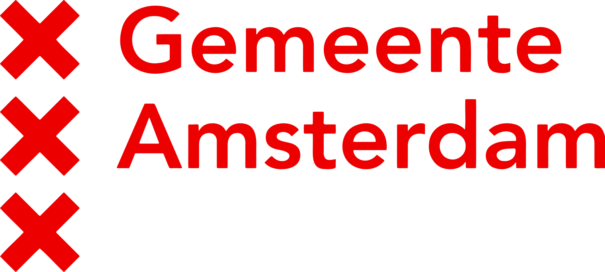
2024 · Case studyOp deze interactieve boekenzoeker vind je snel een boek dat écht bij je past. Kies jouw voorkeuren, blader door de suggesties en stel eenvoudig een wishlist samen die je kunt mailen of uitprinten.
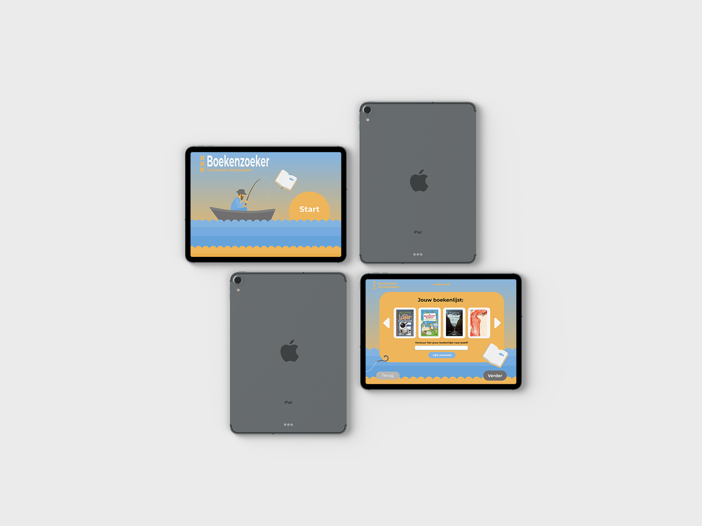
Voor dit project ontwierp ik een interactieve boekenzoeker voor Gemeente Amsterdam. De applicatie helpt leerlingen van 12 tot 15 jaar om snel en eenvoudig een boek te vinden dat bij hun interesses en leesniveau past.
De doelgroep is jong en divers. De app moest daardoor laagdrempelig zijn, geen account vereisen en in een paar stappen leiden tot een persoonlijk boekenadvies. Leerlingen kunnen de lijst vervolgens mailen naar zichzelf of uitprinten om mee te nemen naar de schoolbibliotheek.
De app bestaat uit drie kernschermen die de leerling stap voor stap begeleiden: een uitnodigend startscherm, een voorkeuren-flow en een overzicht van de boekenlijst.
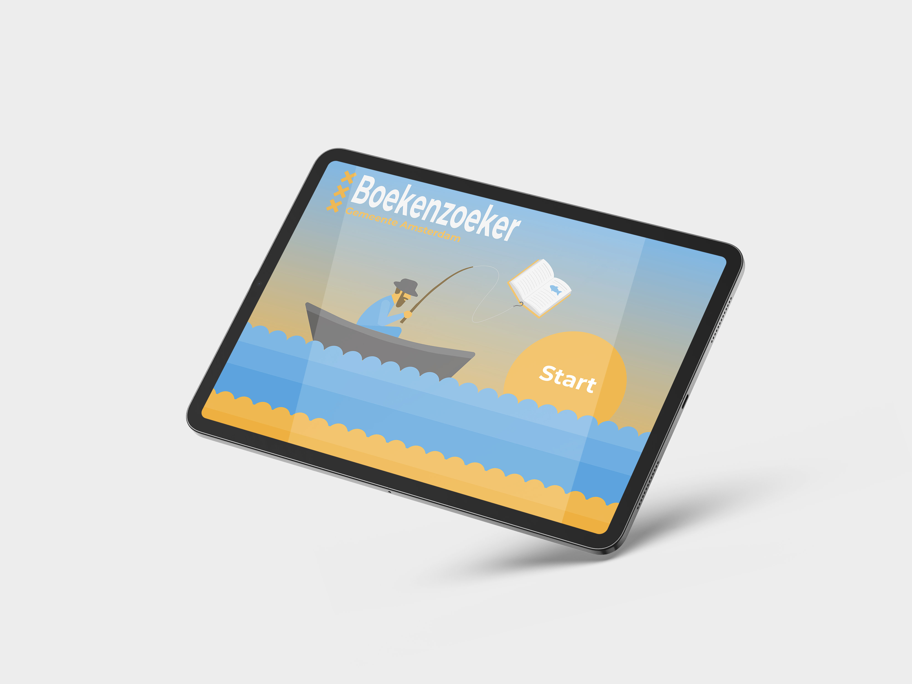
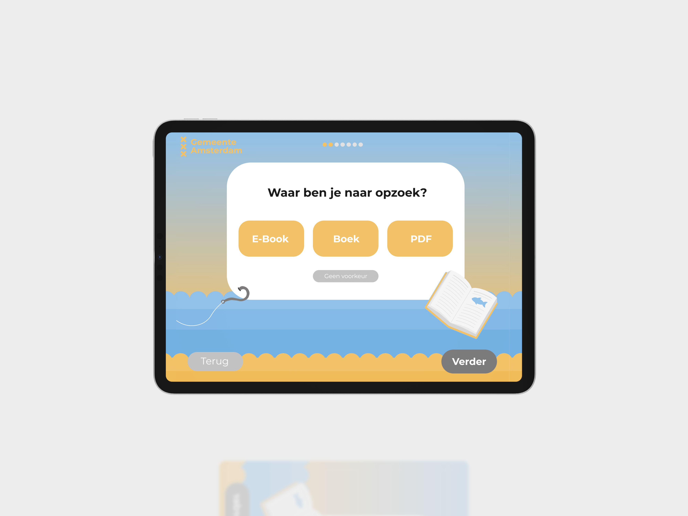
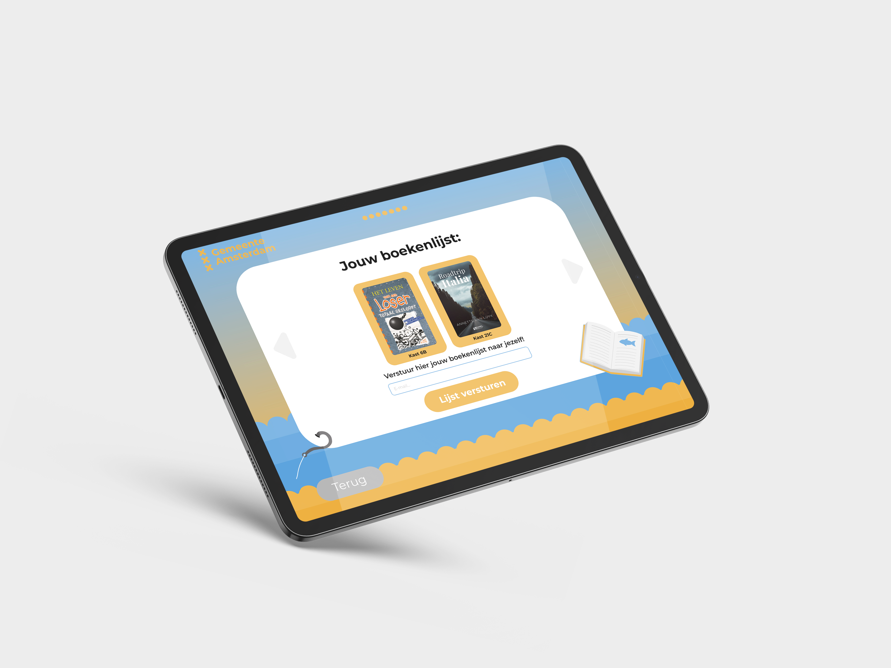
Het ontwerpproces begon met schetsen op papier om snel verschillende ideeën te verkennen en te testen hoe gebruikers door de app zouden bewegen. Daarna zijn de schetsen vertaald naar mid-fidelity en vervolgens hi-fi schermen in Figma.
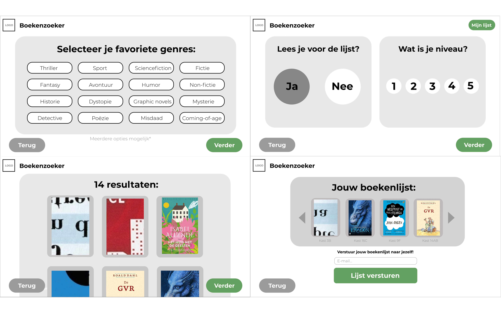
Een overzichtelijke en speelse applicatie voor middelbare scholieren. Duidelijke knoppen, intuïtieve navigatie en het versturen van de boekenlijst zonder dat een account nodig is.
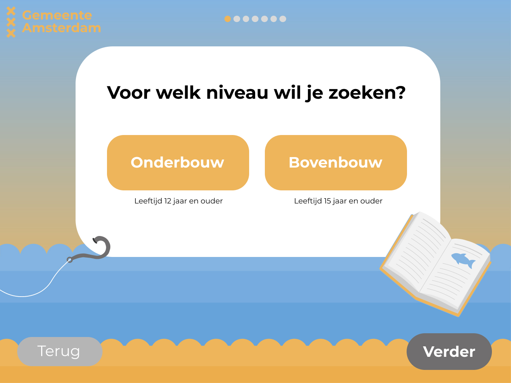
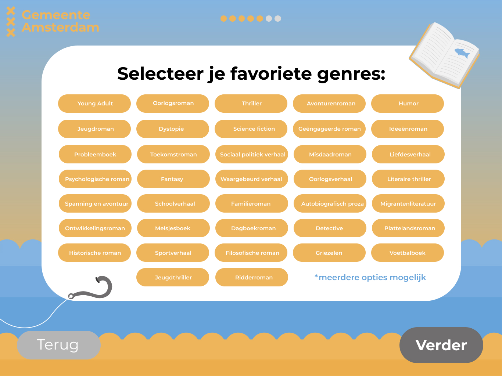
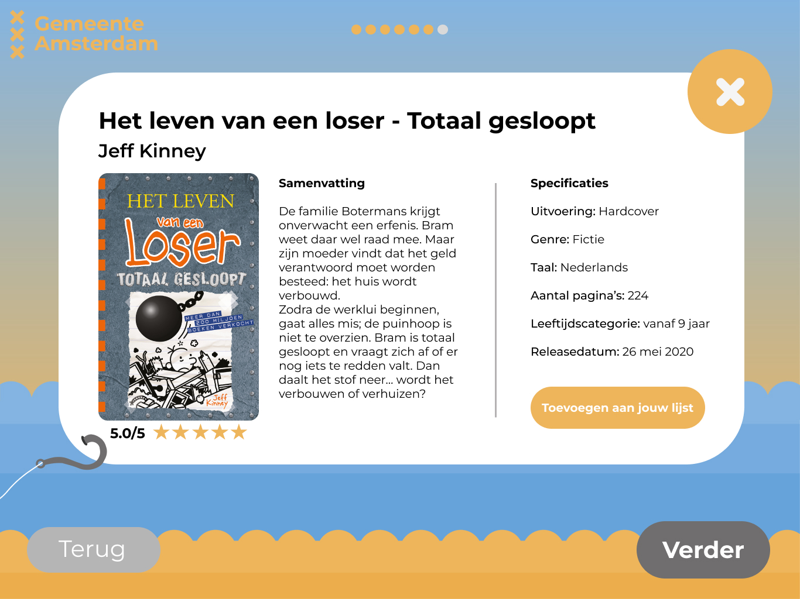
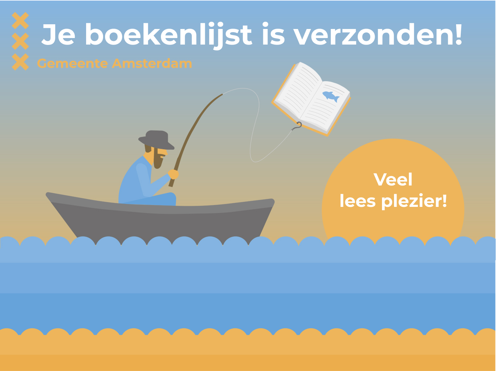
De stijl van de Boekenzoeker is gebaseerd op de huisstijl van Gemeente Amsterdam, aangevuld met speelse illustraties en heldere typografie die aansluit bij de doelgroep.
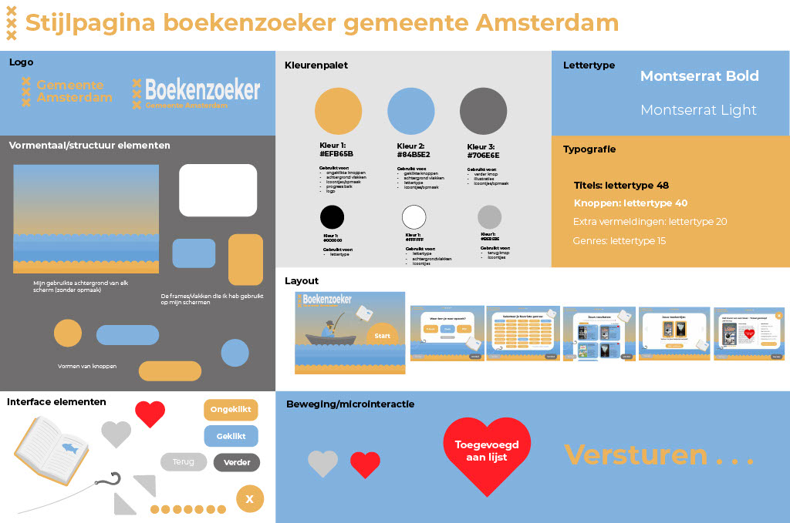